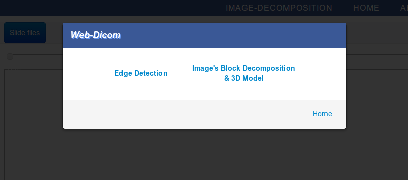
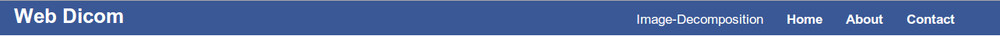
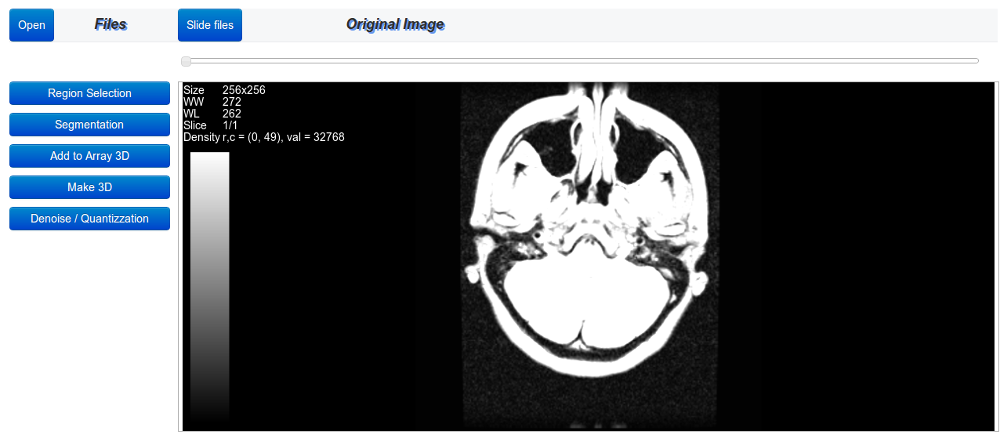
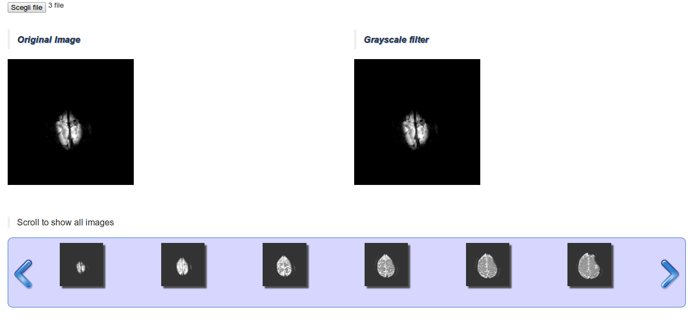
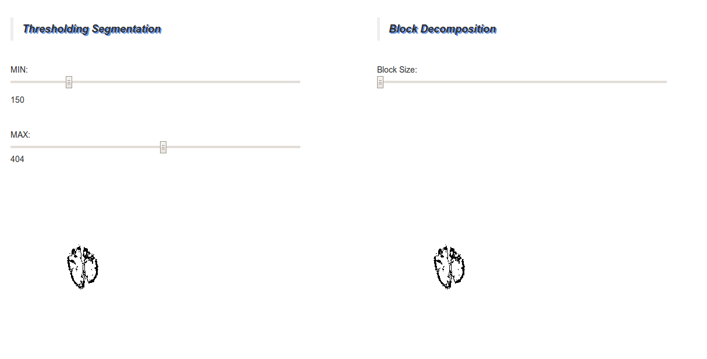
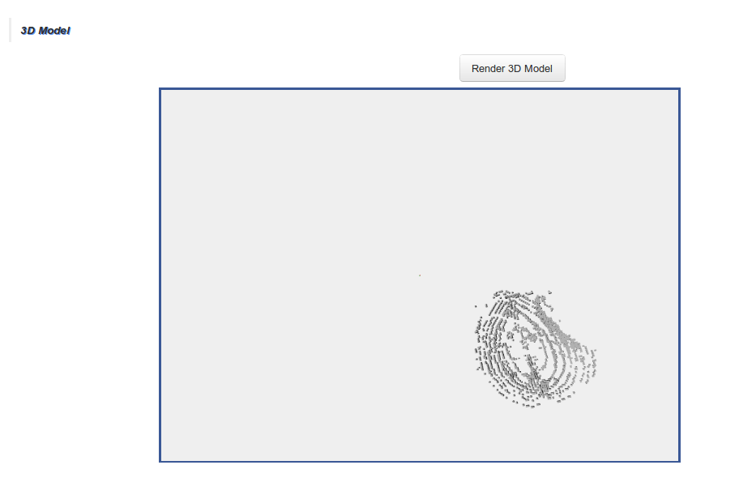
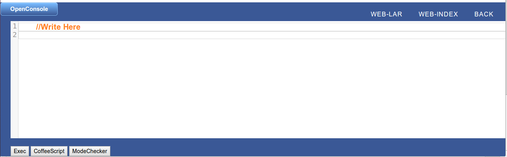

name: inverse layout: true class: center, middle, inverse --- #WEB-VISUAL [interface for Web-Dicom] ##ELEONORA CAPPELLI Matricola: 428286 Roma Tre Corso di Informatica Biomedica 2012/2013 <h6>prof. A. Paoluzzi M. Ceccanti</h6> --- layout: false #.red[Web-Dicom Interface] ##The Web-Dicom project is divided in two parts: ###1) the Edge Detection of DICOM images that are displayed through appropriate viewer; ###2) the image's Block Decomposition and relative 3D model. .link[The interface support both projects with two different UI templates] --- layout: false .left-column[ ## .red[What use for it?] ] .right-column[ Tools for creating Web-Dicom UI: - HTML - CSS - J-QUERY - JAVASCRIPT - PLASM.JS (to view 3D model)] --- ##The first page of Web-dicom interface, show a Modal window where you can find three links </img> - .link[Home] to go back - .link[Edge detection] to show Edge detection and DicomViewer - .link[Image's Block Decomposition & 3D Model] to show the image's decomposition and relative 3D model --- ``` <!-- Button to trigger modal --> <a style="display:none" href="#myModal" id="load" role="button" class="btn" data-toggle="modal">Launch demo modal</a> <!-- MODAL --> <div id="myModal" class="modal hide fade" tabindex="-1" role="dialog" aria-labelledby="myModalLabel" aria-hidden="true"> <div class="modal-header"> <h3 id="myModalLabel">Web-Dicom</h3> </div> <div class="modal-body"> <p> </p> <p class="text-center"> <button style="margin-right: 20px;"class="btn btn-link" data-dismiss="modal" aria-hidden="true"> <strong>Edge Detection</strong></button> <a href="Web-dicom1.html"><button class="btn btn-link"> <strong>Image's Block Decomposition<br> & 3D Model</strong> </button><a/> </p> </div> <div class="modal-footer"> <a href="bihomed.html"><button class="btn btn-link">Home</button><a/> </div> </div> <!-- end modal --> ``` To show the edge detection page you can click on the relative button or click out the modal, this is like a "close" button of the modal. The link of block decomposition project it's a real link to the page. --- ## .red[Edge Detection and Dicom Viewer] </img> the header is composed by 4 links: ``` <div class="navbar"> <div class="navbar-inner"> <a class="brand" href="#">Web Dicom</a> <ul class="nav" > <li style="font-size:17px;"><a href="Web-dicom1.html">Image-Decomposition</a></li> <li style="font-size:17px;" class="active"><a href="index.html"><b>Home</b></a></li> <li style="font-size:17px;"><a id="webdicom-link-about" href="#"><b>About</b></a></li> <li style="font-size:17px;"><a id="webdicom-link-contact" href="#"><b>Contact</b></a></li> </ul> </div> </div> ``` - .link[Image-Decomposition] to go on Block-Decomposition project - .link[Home] to go Home - .link[About] information about the web-dicom group - .link[Contact] UI developer's contact --- ##DICOM section </img> - With .link[Open] button you can upload dicom images that you can slide with the .link[Slide files] button; - I used the bootstrap "span" class to divide the buttons from the dicom canvas; the buttons are relative to php pages developed by web-dicom group. --- ##Function to link the relative pages ``` <div id="region" class="btn btn-primary" style="width: 95%">Region Selection</div> <div id="segmentation" class="btn btn-primary" style="width: 95%">Segmentation</div> ... ... <script> $("#region").click(function () { $("#maincanvas").fadeOut(); postwith('region_selection.php',url); }); $("#segmentation").click(function () { $("#maincanvas").fadeOut(); postwith('image2segment_white.php',url); }); ... </script> ``` ###Each button is linked to a php page --- ## .red[Block Decomposition & 3D Model] </img> - The upload of images call a function that prepares the image for some processing. --- ``` <script> function scaleImage(img){ if(img.width > 500 || img.height > 500){ img.width = img.width*43/100; img.height = img.height*43/100;} return img; } </script> ``` loaded images are scaled; ``` <script> function redrawCarosel(){ $("#liquid").remove(); $("#container-liquid").append('<div id="liquid" class="liquid">' +'<span class="previous"></span><div class="wrapper">' +'<ul class="image-scroll"></ul></div><span class="next"></span>' +'</div>'); for (var i=0; i < images.length; i++) { console.log(images[i].src) $("#liquid").find(".image-scroll").append('<li style="height: 120px; display:' + 'block; float: left; margin-right: 9px; margin-left: 9px;"><a href="#">' +'<img src="'+images[i].src+'" width="88" height="126" alt="image"/>' +'</a></li>' ); }; $('#liquid').liquidcarousel({ height:120, hidearrows: false }); } </script> ``` Scroll allows you to see all the selected images --- </img> ``` <canvas id="canvas_segm" width="550" height="550"></canvas> ``` canvas_segm contain the segmented image ``` <canvas id="canvas_blockDecomp" width="550" height="550"></canvas> ``` canvas_blockDecomp contain the block decomposition of image --- ##Plasm.js section </img> --- ###Css change onclick and onMouseOver/Out ``` <script language=> function on() { $("body").css("overflow","hidden"); } function out(){ $("body").css("overflow","auto"); $("#plasm").css("border","solid"); $("#plasm").css("border-color","transparent"); } function onE() { $("#plasm").css("border","solid"); $("#plasm").css("border-color","#3A5896"); } </script> <div onMouseOver="onE()" id="plasm" width="650" height="450" onclick="on()" onMouseOut="out()"></div> ``` ###Starting Plasm ``` <script> var p; $(function () { console.log('Starting PLaSM...'); p = new Plasm('plasm', 'plasm-inspector'); fun.PLASM(p); }); </script> ``` --- ##Footer </img> Console is into footer and on the right there are 3 links: - .link[Web-lar] to go on Web-lar interface - .link[Web-index] to go on Web-index interface - .link[Back] to go back on Block-Decomposition interface --- name: last-page template: inverse ## direct link to the ## [Project](http://marley1990.github.io/WEB-VISUAL/Web-dicom.html).